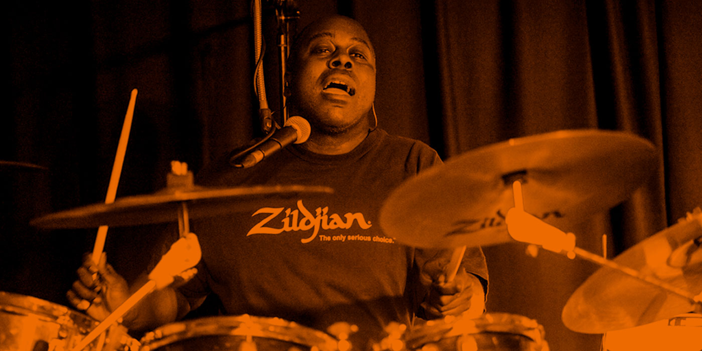
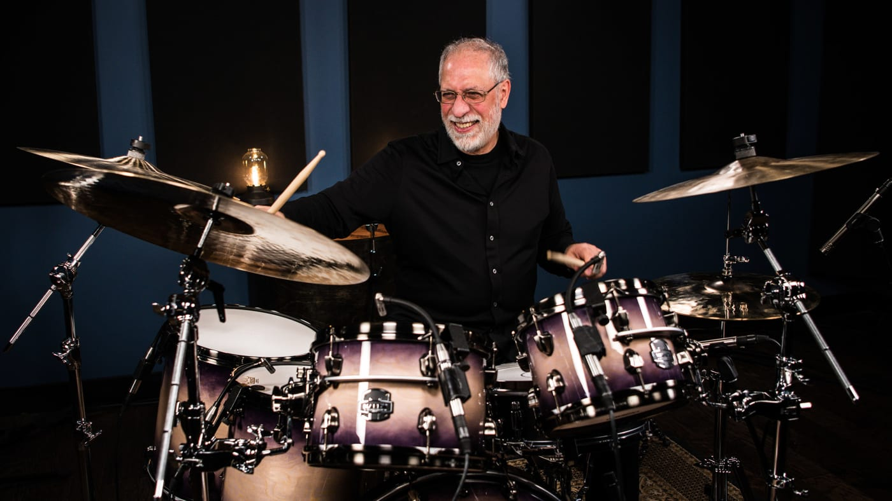

RALPH ROLLE: Dueño del groove

Hace unos dos meses tuve la suerte de ver a Nile Rodgers y Chic en vivo en el teatro
Wiltern de Los Ángeles. No fue mi primera vez. Hace muchos años que mi gran amigo
Jerry Barnes toca el bajo en este grupo y siempre que surge la oportunidad voy a
verlos. La noche anterior al show nos fuimos a cenar a un restaurante argentino
y afortunadamente para mí, y para Músico Pro, Ralph Rolle también asistió a la
cena. Fue un placer conocer a este ser tan especial, gentil, inteligente y
talentoso. Durante un rato largo mi amigo Jerry bromeaba y me decía que Ralph
era uno de los que tiraba los cables en el escenario, que no tiene poco mérito
pero claro, era un juego entre ellos, ya que sabemos lo importante que es el
baterista para el bajista y viceversa, sobre todo en un grupo de funk. Más
tarde me confesaron que era el baterista, yo nunca había conversado con él
antes, conocía su nombre pero sólo lo había visto de lejos en el escenario
y detrás de su instrumento. Podemos decir que en un show como este el
baterista es un pilar fundamental del grupo, el motor que lleva la gran
nave. Al día siguiente fue el espectáculo y por supuesto no usé me asiento
ni por un segundo. Ralph y el grupo sobrepasaron todas mis expectativas.
No solo Rolle tocó como un reloj, pero a la vez con un swing tremendo y
grooveando como pocos bateristas pueden hacerlo, sino que también cantó.
Luego del show nos reunimos todos backstage y pasamos unas horas de charlas
muy bonitas, también con Nile Rodgers.
EL CAMINO QUE QUIERES SEGUIR; NO ES EL CAMINO QUE FUE DISEÑADO PARA TI» DOM FAMULARO

Dom Famularo es baterista, profesor, autor, clínico y orador motivacional
de Long Island, Nueva York. Comenzó a tocar cuando tenía 11 años y se convirtió en un profesional a los 12.
En el mes de febrero de 1964, escuchó por primera vez a The Beatles, en
un show de televisión que se emitía los domingos. «All you need is love»,
«She loves you», «All my loving» eran algunas de las canciones que estaban
tocando cuando «sentí que me daban tanta esperanza, eran muy positivas y
con mucha energía ¿y qué te puedo decir?… cuando vi a Ringo tocar me dije ‘eso es lo que quiero hacer'».
Dom estudió con algunos de los mejores bateristas del siglo XX, incluidos
Jim Chapin y Joe Morello. Apasionado por el jazz e inspirando a otros,
comenzó una exitosa carrera en la enseñanza de la batería a la edad de 17
años, convirtiéndose en uno de los clínicos más solicitados de su tiempo.
La entrevista que duró aproximadamente 47 minutos, comenzó con una visita
guiada por su hogar «Este es mi estudio, lo construí en la parte de atrás de
mi casa» le enseñó a Pablo con la cámara de su teléfono, luego salió al jardín
y continuó mostrándole «Tengo un bosque gigante y allá arriba en esa colina, es
dónde vivo. Mi estudio está hecho a prueba de ruidos fuertes. Cuando cierro la
primer puerta y después la segunda, dejo de escuchar lo que sucede afuera».
Además compartió cómo la música lo ayudó a sanar la «tartamudez», un trastorno del
habla que involucra problemas frecuentes con la fluidez normal y la continuidad de
la palabra. También reveló cuáles fueron sus influencias en la batería, sus
profesores, su amistad con Jim Chapin y por qué lo llamaban «El Padre de la
Indepencencia«. Descubriremos en qué circunstancias conoció a Buddy Rich
«Fue en la casa de Allan Miller. Allan y Buddy estuvieron en la Marina en
la Segunda Guerra Mundial, fueron compañeros. Los dos eran instructores
de artes marciales, los dos eran cinturones negros…» y nos relatará
importantes momentos de su vida, arriba y debajo de los escenarios.
Entre historias y anécdotas; recomendó métodos de batería, libros de lectura
y brindó consejos de enseñanza para niños y niñas bateristas «ellos no quieren
escuchar la historia de la batería. Ellos quieren tocar la batería, así que yo
digo que los pongan en la batería a tocar junto con canciones y que se les
enseñe ritmos y rulos básicos con los que se puedan divertir. Si se divierten
al tocar, después podemos transmitirles las técnicas. Lo primero es capturar
en el alumno y la alumna, la diversion de tocar la batería».